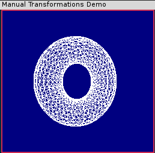

高级矩阵操作
Table of Contents
1 理解变换矩阵
OpenGL在表示一个\(4\times 4\)的矩阵时并没有使用浮点型的二维数组，而是用了一个包含16个浮点值的一维数组来表示。这个方法和许多数学函数库所使用的方法不同，后者常常采用二维数组来表示矩阵。例如，在下面这两个例子中，OpenGL更倾向于使用前者。
GLfloat matrix[16]; // OpenGL所采用的友好矩阵 GLfloat matrix[4][4]; // 更为流行，但不如OpenGL所采用的方式高效
OpenGL也可以使用第二种类型的表示形式，但第一种类型更为高效。其中的缘由很快就会变得更清楚。这16个元素代表一个\(4\times 4\)的矩阵，如下所示。
\[\begin{bmatrix} a_0 & a_4 & a_8 & a_{12} \\ a_1 & a_5 & a_9 & a_{13} \\ a_2 & a_6 & a_{10} & a_{14} \\ a_3 & a_7 & a_{11} & a_{15} \end{bmatrix}\]
当我们按列逐个遍历数组中的元素时，就称为列主序的矩阵顺序。在内存中，用二维数组表示的\(4\times 4\)矩阵是以行主序存储的。这两种方向之间是转置关系。
真正的奥秘在于这16个值表示空间中 一个特定的位置和三个轴的方向 。
下面是一个变换矩阵的例子：
\[\begin{bmatrix} X_x & Y_x & Z_x & T_x \\ X_y & Y_y & Z_y & T_y \\ X_z & Y_z & Z_z & T_z \\ 0 & 0 & 0 & 1 \end{bmatrix}\]
- 前三列：方向向量，表示空间中x、y和z轴的方向。在绝大多数情况下，这3个向量相互之间呈90°垂直（正交）。
- 最后一列：经过变换的坐标系统的x、y和z值。
当我们在单位矩阵上调用 glTranslate 函数时，它所完成的任务就是把我们所提供的x、y、z值放在这个矩阵的第12、13和14位置上。
重点：如果一个\(4\times 4\)的矩阵包含了一个不同的坐标系统的位置和方向。那么，把一个顶点（以一个列矩阵或向量的形式）与这个矩阵相乘，其结果就是一个变换到该坐标系统的新顶点。这意味着空间中的任何位置以及自己所需要的任何方向都可以通过一个\(4\times 4\)的矩阵进行唯一的定义，并且，如果把一个物体的所有顶点与这个矩阵相乘，就可以把整个物体变换到空间中指定的位置和方向！
2 加载矩阵
我们可以使用下面的函数在投影、模型视图或纹理矩阵堆栈中加载一个任意的列主序的矩阵。
glLoadMatrixf(GLfloat m);
glLoadMatrixd(GLfloat m);
绝大多数OpenGL实现用float而不是double类型存储和操作管线数据。因此，如果在程序中使用后者，可能会产生性能上的影响，因为16位的双精度浮点值必须转换为单精度浮点值。下面的代码显示了把一个数组加载到单位矩阵，然后再加载到模型视图堆栈。这个例子调用了高层函数 glLoadIdentity 。
// 加载一个单位矩阵 glFloat m[] = {1.0f, 0.0f, 0.0f, 0.0f, // X列 0.0f, 1.0f, 0.0f, 0.0f, // Y列 0.0f, 0.0f, 1.0f, 0.0f, // Z列 0.0f, 0.0f, 0.0f, 1.0f}; // 移动 glMatrixMode(GL_MODELVIEW); glLoadMatrixf(m);
尽管 OpenGL 实现内部使用列主序的矩阵顺序，但它还是提供了以行主序加载矩阵的函数。下面两个函数在矩阵加载到矩阵堆栈时对它进行转置操作。
void glLoadTransposeMatrixf(GLfloat* m);
和
void glLoadTransposeMatrixd(GLdouble* m);
3 自己执行变换
3.1 代码示例
CANNOT INCLUDE FILE ./program/opengl/transform.cpp
3.2 Makefile
objects = transform.o math3d.o VPATH = shared CFLAG = -lGL -lglut -lGLU CC = g++ transform: $(objects) $(CC) $(objects) $(CFLAG) -o transform transform.o: math3d.h math3d.o: math3d.h clean: -rm *.o run: ./transform
3.3 输出

3.4 分析
在示例程序 TRANSFORM 中，我们在可视区域的前面绘制了一个圆环面，并让它在一个地方旋转。DrawTorus函数执行必要的数学操作来产生这个圆环面的几何形状，并接受一个参数（一个4\(\times 4\)的变换矩阵），把它应用到各个顶点。我们创建这个矩阵并手动的把这个变换矩阵应用到每个顶点，对圆环面进行变换。
我们首先观察主渲染函数。
// Called to draw scene void RenderScene(void) { M3DMatrix44f transformationMatrix; // 旋转矩阵的存储空间 static GLfloat yRot = 0.0f; // 动画的旋转角度 yRot += 0.5f; // 用当前的清除颜色清除窗口 glClear(GL_COLOR_BUFFER_BIT | GL_DEPTH_BUFFER_BIT); // 创建一个旋转矩阵 m3dRotationMatrix44(transformationMatrix, m3dDegToRad(yRot), 0.0f, 1.0f, 0.0f); transformationMatrix[12] = 0.0f; transformationMatrix[13] = 0.0f; transformationMatrix[14] = -2.5f; DrawTorus(transformationMatrix); // 执行缓冲区交换 glutSwapBuffers(); }
我们首先声明这个矩阵的存储空间。
M3DMatrix44f transformationMatrix; // 旋转矩阵的存储空间
数据类型 M3DMatrix44f 是我们自己设计的，它只是 math3d.h 中的一个typedef声明，表示一个长度为16个元素的浮点型数组。
typedef float M3DMatrix44f[16]; // 一个 GLfloat 类型的列主序 4 X 4 矩阵
这个例子中的动画是通过连续增加变量yRot的值实现的，这个变量表示绕y轴旋转的角度。在清除了颜色和深度缓冲区之后，我们像下面这样构建了自己的变换矩阵。
// 创建一个旋转矩阵 m3dRotationMatrix44(transformationMatrix, m3dDegToRad(yRot), 0.0f, 1.0f, 0.0f); transformationMatrix[12] = 0.0f; transformationMatrix[13] = 0.0f; transformationMatrix[14] = -2.5f;
第一行代码包含了对另一个math3d函数 m3dRotationMatrix44 的调用，这个函数接受一个以弧度为单位的旋转角度（这是为了便于计算），另外3个参数指定了一个向量，旋转将绕着这个向量进行。宏函数 m3dDegToRad 在内部完成从角度到弧度的转换。除了角度是以弧度为单位而不是以角度为单位外，这个函数几乎和 OpenGL 函数 glRotate 完全相同。它的第一个参数是个矩阵，最终产生的旋转矩阵就存储在这里。
这个矩阵的最后一列表示了这个移动变换。我们不需要执行完整的矩阵乘法，而只需简单地在矩阵中插入所需要的移动向量。现在，这个矩阵既表示空间中的一个移动（放置圆环）面的位置，也表示在这个位置对物体的坐标系统应用一次旋转。
接着，我们把这个变换矩阵传递给 DrawTorus 函数。我们并不需要列出这个用来创建圆环面的函数的完整代码，而只需把注意力集中在下面这几行。
objectVertex[0] = x0*r; objectVertex[1] = y0*r; objectVertex[2] = z; m3dTransformVector3(transformedVertex, objectVertex, mTransform); glVertex3fv(transformedVertex);
顶点的3个成分被加载到一个数组中，并传递给 m3dTransformVector3 函数，这个math3d函数执行这个顶点与矩阵的乘法并把经过变换的顶点返回到transformVertex数组中。然后，我们使用向量版本的glVertex函数，把该顶点数据发送给OpenGL。其结果是一个旋转的圆环面。
4 改进的程序
对于几何图形的处理，TRANSFORM示例程序是非常低效的。我们让CPU完成所有的矩阵运算，而不是让OpenGL的专用硬件为我们完成这些工作（它们的处理速度比CPU快得多！）。另外由于OpenGL具有模型视图矩阵，所有经过变量的顶点都会与单位矩阵相乘。这并不会改变这些经过变换的定点的值，但它仍然是一种纯属浪费的操作。
为了完整起见，我们提供了一个经过改进的例子。
4.1 代码
CANNOT INCLUDE FILE ./program/opengl/transformgl.cpp
4.2 分析
这个程序并不使用我们自己的变换矩阵，并使用了一个更为通用的圆环面绘制函数 gltDrawTorus （来自 glTools 函数库），从而消除了对DrawTorus函数的调用。
5 变换的叠加
在前面那个例子中，我们简单的构建了一个变换矩阵，并把它加载到了模型视图矩阵。使用这种技巧的效果相当于在渲染发生之前对这个矩阵之后的任意（或所有）几何图形进行变换。正如我们在前面的另一个例子中所看到的那样，我们常常把一个变换和另一个变换放在一起。例如，我们先使用 glTranslate 再接着使用 glRotate ，在绘制物体之前首先对它进行移动，然后对它进行旋转。在幕后，当我们调用多个变换函数时，OpenGL将在原有的变换矩阵和我们所添加的矩阵之间执行矩阵乘法操作。例如，在TRANSFORMGLn例子中，可以用类似下面的代码替换原代码中的相应代码段：
glPushMatrix();
glTranslatef(0.0f, 0.0f, -2.5f);
glRotatef(yRot, 0.0f, 1.0f, 0.0f);
gltDrawTorus(0.35, 0.15, 40, 20);
glPopMatrix();
上述代码的效果就是保存当前的单位矩阵，与移动矩阵相乘，与旋转矩阵相乘，然后根据相乘结果绘制圆环面。我们也可以使用 math3d 函数 m3dMatrixMultiply 来完成这些矩阵乘法。如下所示。
M3DMatrix44f rotationMatrix, translationMatrix, transformationMatrix; ... m3dRotationmatrix44(rotationMatrix, m3dDegToRad(yRot),0.0f, 1.0f, 0.0f); m3dTranslationMatrix44(translationMatrix, 0.0f, 0.0f, -2.5f); m3dMatrixMultiply44(transformationMatrix, translationMatrix, rotationMatrix); glLoadMatrixf(transformationMatrix); gltDrawTorus(0.35f, 0.15f, 40, 20);
OpenGL还提供了自己的矩阵乘法函数： glMultMatrix 。这个函数接受一个矩阵，并把它与当前加载的矩阵相乘，然后把结果存储在矩阵堆栈的顶部。最后，我们再次显示与前面等价的代码段，但这次让OpenGl完成实际的矩阵乘法。
M3DMatrix44f rotationMatrix, translationMatrix, transformationMatrix; ... glPushMatrix(); m3dRotationmatrix44(rotationMatrix, m3dDegToRad(yRot), 0.0f, 1.0f, 0.0f); m3dTranslationMatrix44(translationMatrix, 0.0f, 0.0f, -2.5f); glMultMatrixf(translationMatrix); glMultMatrixf(rotationMatrix); gltDrawTorus(0.35f, 0.15f, 40, 20); glPopMatrix();